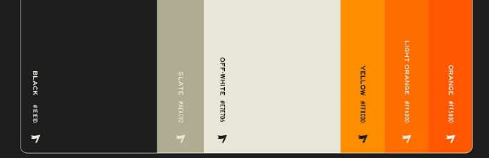

QCar2 Taxi Mission (ROS)
A ROS2-based control stack for autonomous taxi missions in the Quanser QCar2 virtual environment, focused on safe actuator authority and deterministic control.
Summary
Runs perception, mission planning, and a single-authority main controller to publish safe motor commands and follow mission waypoints with lane and traffic-rule awareness.
My Role
- Designed mission planner and main controller node
- Integrated YOLO-based traffic detections and rule handling
- Defined safety checks to prevent actuator contention
Tech
ROS2 (Humble), Python, Docker, Isaac/Quanser virtual environments, YOLO inference

Notes
Designed for repeatable, safe experiments across virtual containers; emphasizes single-authority motor command publication.